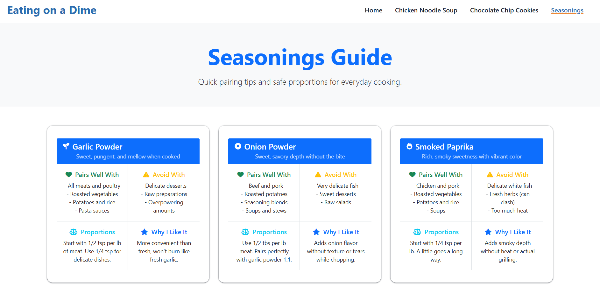

Project Overview
For Project 2 in WEB 2890, I redesigned a small recipe website called Eating on a Dime - Family Edition. The goal was to create a responsive, Bootstrap-based experience that made it easy for busy families to find budget-friendly recipes without scrolling through long stories or cluttered layouts.
I designed and coded a multi-page site including a recipe-focused home page, detailed recipe pages (for example: Chicken Noodle Soup), and a structured Seasonings Guide to help newer cooks understand how to use spices confidently.
Problem
Many recipe sites are packed with ads, long intros, and confusing layouts. For this project I defined the core problem as:
'Home cooks need fast, scannable recipes that get straight to ingredients, serving sizes, and steps, without wasting time or money on confusing instructions.''
In addition, new cooks often feel unsure about seasonings—how much to use, what they pair with, and what to avoid-so I wanted the site to quietly teach them as they cooked.
Goals
- Surface the most important information first: ingredients, total time, servings, and difficulty.
- Make recipes easy to skim with clear sectioning and numbered steps.
- Create an approachable Seasonings Guide with "pairs well with / avoid with / proportions / why I like it" for each spice.
- Build everything with semantic HTML, accessible labels, and responsive Bootstrap layouts.
Information Architecture
The final IA for this small site:
- Home - hero statement, featured recipes, seasonings teaser, footer newsletter.
- Recipe Pages (e.g., Chicken Noodle Soup, Cookies) - hero image, summary tiles, servings calculator, ingredients, instructions.
- Seasonings Guide - grid of card-based seasoning profiles.
- Recipe image with alt text.
- Short one-sentence description.
- Star rating visual with review count.
- Quick meta row: total time + difficulty badge.
- Seasoning Spotlight on the home page with three "starter" spices (Garlic Powder, Onion Powder, Smoked Paprika).
- A full Seasonings Guide page with a grid of detailed cards.
- Pairs Well With
- Avoid With
- Proportions (how much to use)
- Why I Like It (personal, friendly guidance)
- Used semantic headings (H13H3) to reflect the content structure.
- Added aria-labels to icon-only buttons.
- Buttons vs. links: Call to actions that trigger actions.
- Colors chosen to keep sufficient contrast against white and darkbackgrounds.
- How to balance visual design with strict content priorities so users can find what they need quickly.
- How to structure UI copy in a voice that feels friendly and encouraging instead of intimidating.
Key Design Decisions
1. "Fast, tasty, budget-friendly" hero
The home page opens with a simple value statement: "Fast, tasty, budget-friendly" and a sub-line, "Straight to ingredients, steps, and smart serving sizes.""
2. Featured Recipe Cards
I highlighted two core recipes—Chicken Noodle Soup and Chocolate Chip Cookies—using custom Bootstrap cards:
This structure makes it easy to compare recipes at a glance. The cards are responsive: three across on large screens, two on medium, one on mobile.
3. Seasonings Spotlight & Guide
New cooks often know salt and pepper but feel lost beyond that, so I created two layers:
Each card uses a consistent four-quadrant layout:
This turns intimidating spice jars into approachable, practicaltips that match the "family edition" tone.
Accessibility & Semantics
What I Learned
Project Details
- WEB 2890 Project 2 - multi-page Bootstrap site.
- 3 main templates: Home, Recipe Detail, Seasonings Guide.
- Responsive across desktop, tablet, and mobile.
Links
- Live Site: Eating on a Dime - Family Edition
Responsibilities
- Concept definition & IA
- Wireframes & visual design
- Front-end implementation
- Accessibility & copywriting